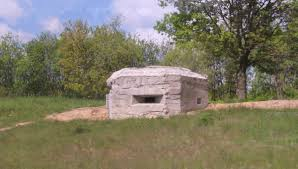
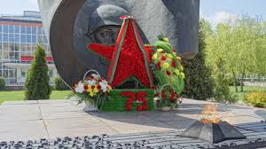

По следам укрепрайонов и воинской славы


Барановичи — город с богатой военной историей: здесь располагались штабы, укрепрайоны, а в годы войн город был важным узлом обороны. Мы пройдём по местам боевой славы, увидим сохранившиеся ДОТы, братские могилы и мемориалы.
Длительность: 3 часа | Группа до 20 чел